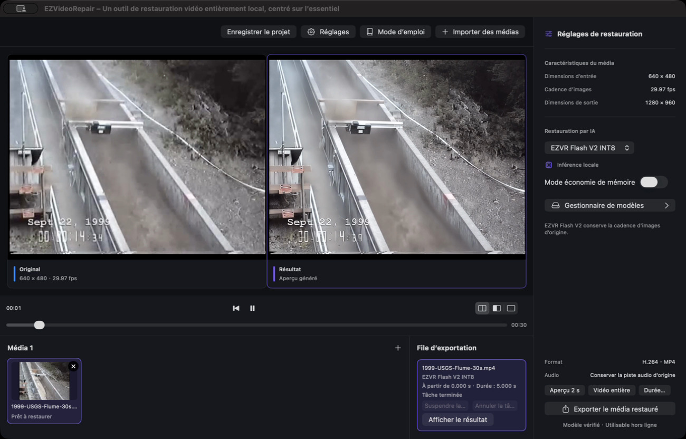
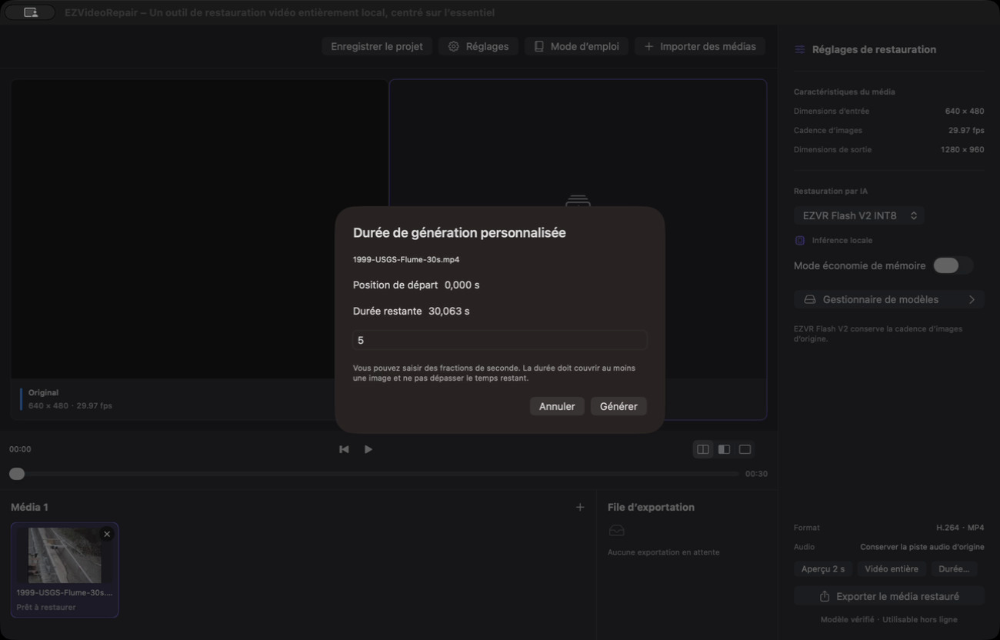
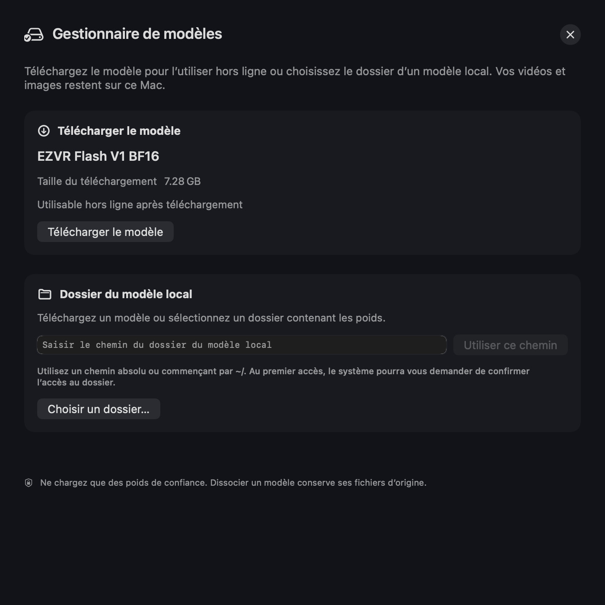
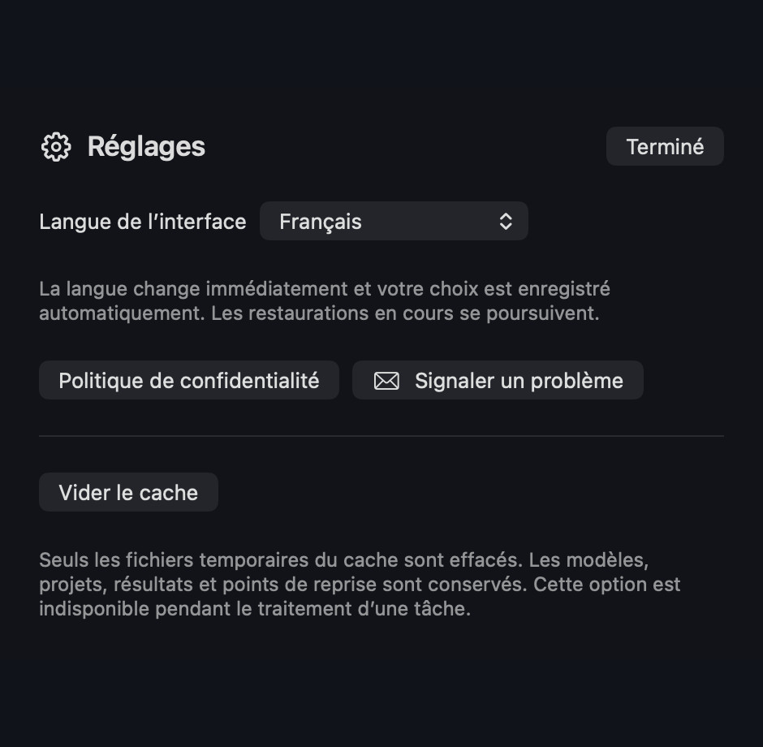

Évaluer le résultat
Générez un aperçu de deux secondes à partir de la position de lecture. Vous pourrez ensuite décider de restaurer toute la vidéo.
Choisissez deux secondes de vidéo pour juger du résultat avant de restaurer un extrait ou la vidéo entière. Vous pouvez aussi restaurer une photo.
Version 0.0.4 (build 4). Pour les Mac avec puce Apple sous macOS 14 ou une version ultérieure. Ouvrez le DMG et faites glisser EZVideoRepair dans le dossier Applications. L’interface est disponible en français, en chinois simplifié, en anglais et en espagnol.

Suivez la restauration dans l’interface en français. Le temps d’attente a été raccourci au montage. La comparaison finale montre les cinq premières secondes de l’expérience, en 640 × 480 et en 1 280 × 960 pixels, côte à côte.
Impossible de lire la vidéo sur cette page. Ouvrir le fichier MP4
Les images du canal proviennent de l’expérience du 22 septembre 1999, au cours de laquelle l’USGS a filmé de l’eau s’écoulant sur un lit de sédiments érodé. Consulter les archives vidéo de l’USGS (en anglais).
Voir la démonstration en chinois, en anglais, en espagnol et en français (MP4)
Impossible de lire la vidéo sur cette page. Ouvrir le fichier MP4
30 secondes · Original en 384 × 288 pixels · 25 images/s
Parc national de Lamington, Australie · Septembre 1996
Passez d’une version à l’autre pendant la lecture ou faites une pause sur la même image pour comparer les détails du plumage et du sol de la forêt.
Les deux versions INT8 sont présentées uniquement à titre de démonstration.
Aviceda a filmé la vidéo originale, Albert’s Lyrebird OR. Nous en avons extrait les secondes 7 à 37, supprimé le son et converti l’extrait en MP4. La vidéo d’origine, cet extrait, ses quatre restaurations et l’image de couverture de l’oiseau-lyre sont diffusés sous licence CC BY-SA 3.0.
Cliquez sur une capture pour l’agrandir. La fenêtre principale et le choix de la durée sont tirés de la démonstration en français de l’expérience en canal.



Votre Mac traite vos vidéos et vos photos. Après la configuration initiale, vous pouvez travailler hors ligne.
Importez vos fichiers, examinez un aperçu et choisissez ce que vous voulez exporter.
Générez un aperçu de deux secondes à partir de la position de lecture. Vous pourrez ensuite décider de restaurer toute la vidéo.
Traitez la vidéo entière ou limitez la restauration au passage qui vous intéresse.
Prévisualisez un extrait d’une vidéo horizontale ou verticale. Ouvrez aussi une photo pour examiner les détails après restauration.
Rouvrez un projet enregistré pour retrouver vos réglages et les résultats déjà obtenus.
Si le fichier source et les réglages sont identiques, l’application réutilise le résultat existant pour éviter de refaire le calcul.
Les fichiers de configuration se téléchargent en arrière-plan. Vous pouvez suivre la progression, mettre le téléchargement en pause et le reprendre plus tard.
Ouvrez le DMG et faites glisser EZVideoRepair dans le dossier Applications. Au premier lancement, suivez les instructions de configuration.
Importez votre fichier, choisissez le point de départ et examinez l’aperçu de deux secondes.
Choisissez de traiter toute la vidéo ou un extrait, puis exportez le résultat. Vous pouvez enregistrer le projet pour y revenir plus tard.
Non. Votre Mac traite les vidéos et les photos localement. La configuration initiale peut nécessiter une connexion Internet pour télécharger certains fichiers.
La restauration est actuellement disponible uniquement sur les Mac avec puce Apple.
La durée dépend du Mac, du fichier source et de la longueur de l’extrait. Le traitement peut durer bien plus longtemps que la lecture de la vidéo. Commencez par un aperçu de deux secondes pour choisir le passage à restaurer.
Oui. Le projet conserve les réglages et les résultats, et garde une référence à l’emplacement des originaux. Pour changer de Mac, copiez le projet et les fichiers d’origine.
Les modèles V1 et V2, en INT8 ou BF16, peuvent lire leurs poids sur le SSD couche par couche. V1 nécessite un graphe d’inférence compatible. Lors d’un essai avec V2 INT8 sur un Mac M4 Pro doté de 24 Go, ce mode a réduit le pic de mémoire de 12,13 Go à 8,96 Go pour un extrait de 30 secondes. Le temps de traitement est passé de 366 à 379 secondes. Ce mode est désactivé par défaut.
V1 retire les marges ajoutées pendant le traitement et conserve les bandes noires présentes dans l’original. Avec un graphe d’inférence carré de 512 × 512 pixels, V1 peut traiter les grandes photos et vidéos par blocs qui se chevauchent. V2 utilise des blocs lorsque l’image vidéo est trop grande pour être traitée en une seule fois. Le traitement par blocs accepte jusqu’à 4 096 pixels par côté et 9 437 184 pixels par image.
Téléchargez la version Mac (DMG), ouvrez le fichier et faites glisser EZVideoRepair dans le dossier Applications. Vous pouvez aussi télécharger la version précédente (0.0.3).
De l’aperçu à l’exportation, votre Mac traite vos vidéos et vos photos sur place. Vous choisissez ensuite de partager ou de conserver le résultat.
Télécharger pour Mac (DMG)